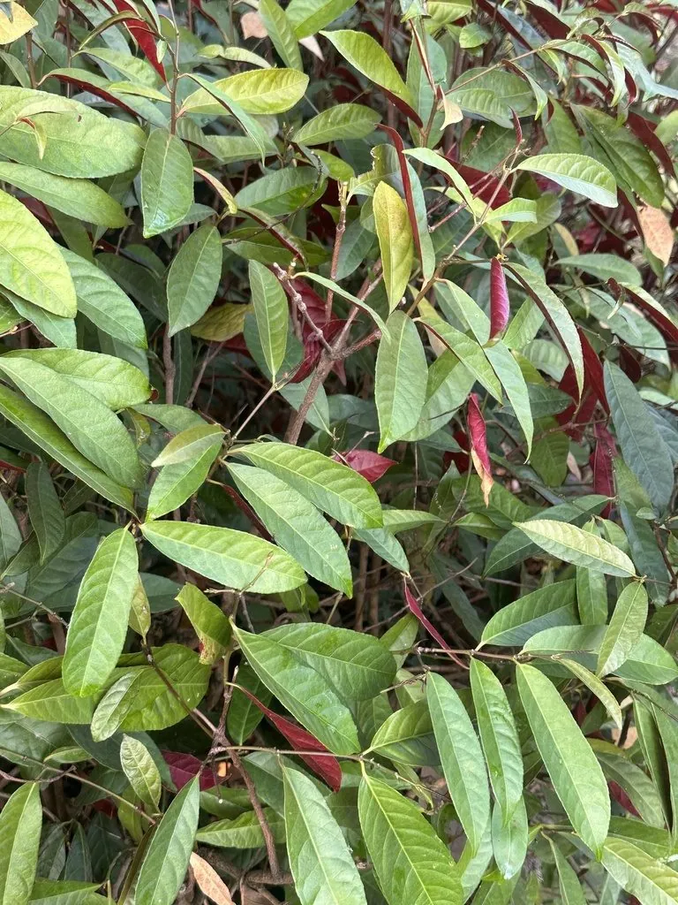

灌木与花木 · 植物界
红背桂 Excoecaria cochinchinensis

大戟科常绿灌木，叶面绿色、叶背紫红，四季常青、耐阴，是南方庭院与盆栽常见的观叶植物，乳汁有毒。
- 分类
- 门被子植物门纲木兰纲目金虎尾目科大戟科属土沉香属
- 栖息环境
- 山坡林下、溪边与庭院，喜温暖湿润和半阴
- 地理分布
- 中国广东、广西、云南、海南；越南有分布
- 保护级别
- 暂无评估；中国未列入国家重点保护野生植物名录
物种志
红背桂为大戟科土沉香属常绿灌木，高 1–2 米，枝条细软，全株含白色乳汁。叶对生，狭椭圆形至披针形，叶面深绿色、有光泽，叶背紫红色，边缘具细锯齿。花单性异株，黄绿色，花小，组成腋生的聚伞花序，花期 6–8 月；果实为蒴果，球形，果期 9–10 月。
红背桂原产中国广东、广西、云南及越南等地，生于山坡林下与溪边，喜温暖湿润、半阴的环境，不耐寒，适宜疏松肥沃、排水良好的酸性土壤。它叶面翠绿、叶背紫红，四季常青，是南方庭院、林下与盆栽常见的观叶植物。乳汁有毒，接触皮肤可能引起红肿，修剪与换盆时应戴手套；栽培中忌强光暴晒与积水，冬季需移入室内。
形态与习性
- 株高1–2 米，枝条细软
- 叶色叶面深绿，叶背紫红
- 花期6–8 月，花小、黄绿色
- 光照喜半阴，忌强光暴晒
- 水分喜湿润，忌积水
- 土壤疏松肥沃、排水良好的酸性土
- 主要用途庭院、林下与盆栽观叶
趣味知识
- 红背桂的叶片正面绿色、背面紫红，是典型的双色叶植物。
- 它属于大戟科，折断枝叶会流出白色乳汁。
- 乳汁有毒，接触皮肤可能红肿，修剪时需戴手套。
- 红背桂不耐寒，北方多作盆栽，冬季移入室内。